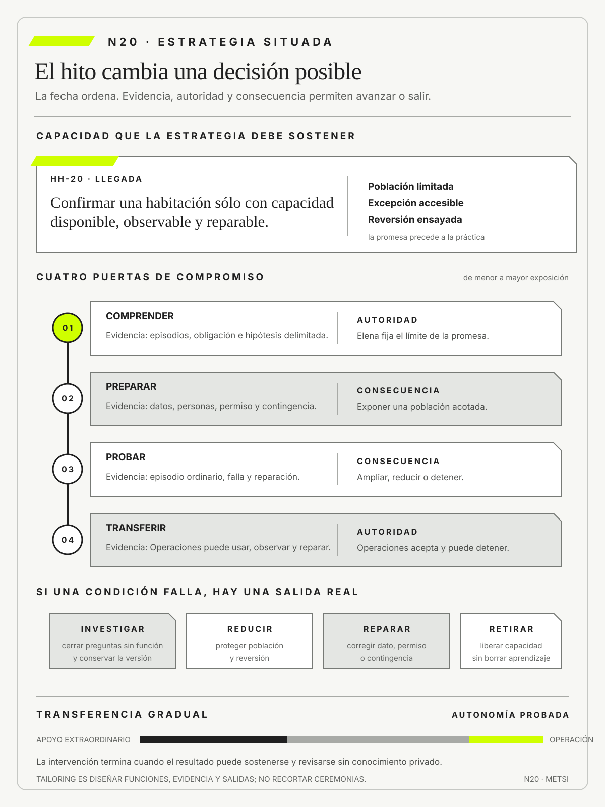

Barry Boehm
A Spiral Model of Software Development and EnhancementComputer · 1988
Vinculó compromiso progresivo y reducción de riesgo.

Falla cuando el calendario o el nombre de un marco sustituyen las condiciones para avanzar, detener, transferir o retirar.
Estrategia metodológica: tailoring, hitos y condiciones de salida
Ruta de lectura: problema, distinciones, decisiones, prueba, transferencia y preparación.

Nota. SIN NUM. identifica aparatos de orientación y referencia.
Seis referentes y las obras principales utilizadas para construir N20.
Vinculó compromiso progresivo y reducción de riesgo.

Explicó reflexión y revisión en la práctica profesional.

Mostró la relación entre estrategia deliberada y emergente.

Desarrolló estrategia bajo incertidumbre, ventajas transitorias y retiro disciplinado de apuestas.

Formuló principios adaptativos que subordinan la práctica a la retroalimentación y el cambio.

Desarrolló una concepción situada de métodos, personas y restricciones de proyecto.
N20 no resume estas fuentes ni las convierte en receta. Las pone en tensión para construir juicio profesional.
¿Cómo componer una estrategia que coordine aprendizaje, entrega, gobierno y retiro sin convertir el método en receta ni la adaptación en improvisación?

Cada práctica debe responder al riesgo y cada hito debe vincular evidencia, autoridad y una decisión posible.
Una universidad inicia la renovación de su sistema de inscripción. La conducción reúne descubrimiento, planificación, backlog, sprints, tablero Kanban, arquitectura, comité de datos, piloto, auditoría, retrospectivas y gestión de riesgos. Ninguna práctica parece incorrecta. Cada una posee reuniones, responsables y entregables. A los cuatro meses, todas siguen activas y ninguna puede explicar qué decisión habilitó.
El descubrimiento agrega entrevistas sin cerrar incertidumbres. Los sprints producen configuraciones que el piloto todavía no puede usar. El comité revisa informes y nunca detiene. La auditoría solicita evidencia que el sistema aún no genera. El plan registra hitos, pero las dependencias críticas viven fuera de él. La abundancia metodológica crea trabajo y coordinación, no una arquitectura de compromiso.
El primer diagnóstico culpa a la mezcla de enfoques y propone adoptar uno solo. Una explicación rival sostiene que el problema no está en la variedad, sino en la ausencia de función, secuencia y salida. PMBOK, Scrum, Kanban, descubrimiento, experimentación y control pueden convivir si cada práctica responde qué información consume, qué decisión habilita, qué riesgo compensa y cuándo deja de ser necesaria.
El nuevo mapa revela incompatibilidades. La cadencia de revisión exige decisiones semanales, pero el comité regulatorio se reúne una vez por mes. El piloto necesita datos que la migración sólo producirá al final. La auditoría pide trazas que la configuración actual no conserva. Ninguna práctica individual es absurda; su composición genera esperas, duplicación y evidencia tardía. Tailoring no significa recortar ceremonias, sino diseñar relaciones coherentes entre procesos, ritmos, controles y contexto.
La conducción reconstruye el recorrido desde la promesa. Comprender termina cuando episodios y obligaciones permiten formular hipótesis rivales. Preparar termina cuando datos, personas, ambiente y contingencia vuelven legítima una exposición. Probar termina con evidencia suficiente para ampliar, modificar o detener. Transferir termina cuando la operación sostiene y repara sin asistencia extraordinaria. Cada tramo conserva entrada, salida y autoridad.
Dos decisiones muestran la diferencia. Una línea de investigación se cierra porque ningún resultado cambiaría las opciones disponibles. Un anuncio institucional se posterga porque todavía no existe una ruta de reversión. El equipo libera capacidad y evita que continuar toda actividad parezca prudencia. Gobernar una estrategia también significa renunciar a prácticas útiles cuando su función ya está cubierta.
El dispositivo metodológico distingue estructuras temporales de capacidades permanentes. El proyecto puede cerrar mientras el producto, el servicio o la plataforma continúan. El equipo que interviene transfiere evidencia, límites, responsabilidades y señales; no abandona un conjunto de entregables ni perpetúa su presencia por temor a que la operación falle.
La estrategia queda documentada como una decisión revisable. Para cada práctica declara propósito, costo, dependencia, evidencia esperada y condición de retiro. Una modificación no se justifica por preferencia del equipo ni por fidelidad a un marco, sino por un cambio observado en contexto, riesgo o conocimiento. De ese modo, adaptar no equivale a improvisar y cumplir no equivale a conservar una práctica después de que dejó de aportar.
N20 cierra el Bloque D. Integra lo aprendido en N17, N18 y N19 dentro de una estrategia situada que puede ejecutarse, cuestionarse y terminar. Su producto no es un plan perfecto ni una combinación vistosa de marcos, sino una secuencia gobernada de compromisos y aprendizaje donde cada práctica justifica su existencia.
HH-19 eligió configurar el flujo ordinario, integrar evidencia de cerradura y mantener revisión humana en excepciones sensibles. En HH-20, Federico Müller propone un plan técnico único, mientras Ricardo Sosa pide separar la ventana de migración, la prueba de reglas y la transferencia a operación. Elena Acosta exige saber qué decisión toma cada hito y quién puede impedir que el calendario sustituya la evidencia.

El equipo define cinco puertas. Comprender exige episodios reconstruidos, compromiso institucional verificado y estado normativo explícito, incluida cualquier fuente todavía pendiente de validación competente. Elegir compara alternativas y renuncias. Preparar demuestra datos, contingencia y personas disponibles. Ampliar requiere resultados del piloto por población, incluida accesibilidad. Transferir exige que Lucía Ferreyra y Mariela Benítez puedan operar, observar y reparar sin conocimiento privado de Tecnología.
Cada puerta conserva entrada, evidencia, autoridad y salida. Camila Duarte no puede ampliar la promesa antes de la puerta de ampliación; Federico no puede declarar transferencia por despliegue exitoso; Operaciones puede detener ante discrepancias de estado o compensaciones crecientes. El tablero registra decisiones, no porcentajes de actividad, y mantiene la alternativa manual mientras el costo de equivocarse sea mayor que el de esperar.
La puerta de comprensión se prueba con un desacuerdo. Comercial interpreta “confirmada” como mensaje enviado; Recepción, como capacidad disponible; Housekeeping, como trabajo preparado. El hito no exige uniformar palabras, sino acordar qué condiciones autorizan cada acción y cómo se representa la diferencia. La evidencia incluye episodios, contratos y estados. Elena decide el límite de la promesa con argumentos visibles.
La puerta de preparación falla en el primer intento. Existe copia de seguridad, pero nadie ensayó reconciliar reservas creadas durante una reversión. En lugar de marcar la condición como casi cumplida, se reduce alcance y se realiza el ejercicio. El retraso compra conocimiento sobre una falla que de otro modo aparecería durante la llegada. El calendario se ajusta porque la estrategia reconoce dependencia real.
La transferencia se ensaya en turno nocturno. Lucía detecta una discrepancia y puede detener, pero no acceder al registro del proveedor. HH-20 no cierra hasta corregir permiso y escalamiento. El criterio impide confundir formación con autonomía. La capacidad existe cuando información, autoridad y recursos llegan al lugar donde ocurre la decisión.
El cierre se produce por capas. Primero se retira el acompañamiento extraordinario del equipo técnico; después se reduce la frecuencia del comité; finalmente la revisión de desempeño pasa al régimen habitual. Durante ese descenso se observa si aumentan incidentes, tiempos de reparación o decisiones sin autoridad. Una señal adversa puede restituir temporalmente apoyo sin negar la transferencia. La autonomía se demuestra bajo condiciones, no mediante un acto único.
El expediente final conserva decisiones que explican la estrategia y elimina controles que ya no tienen finalidad. La línea de base, las pruebas críticas y los asuntos abiertos permanecen vinculados con responsables. Accesos de proveedores y ambientes transitorios se revocan. La operación recibe no sólo el flujo, sino presupuesto, permisos y ruta de escalamiento. Lo que no puede sostenerse con esa capacidad queda declarado como restricción y no como deuda invisible.
Esta salida prepara el cambio conceptual siguiente. El proyecto puede terminar mientras producto y servicio continúan; una plataforma puede exigir gobierno compartido más allá del equipo que la creó. HH-20 no resuelve esa arquitectura persistente, pero entrega evidencia suficiente para que N21 no confunda el cierre del esfuerzo temporal con el cierre de la responsabilidad.
HH-20 termina cuando Operaciones sostiene la capacidad y puede revisar sus supuestos. Como cierre, HH-21 recibirá ese resultado para distinguir qué parte fue proyecto temporal, qué parte debe gobernarse como producto, qué promesa constituye el servicio y qué capacidades compartidas forman una plataforma.
Una estrategia metodológica es defendible sólo cuando la intensidad de cada práctica responde al riesgo y cada hito vincula evidencia, autoridad y una decisión posible. Falla cuando el calendario o el nombre de un marco sustituyen las condiciones que permiten avanzar, detener, transferir o retirar. La implicación profesional es diseñar una secuencia situada cuyos compromisos puedan modificarse y cuya autonomía final pueda probarse sin apoyo extraordinario.
Una estrategia situada vincula cada práctica y cada hito con función, evidencia, autoridad, consecuencia y salida.

N19 entrega una arquitectura de realización con alternativas descartadas, dependencias, costos de salida y mecanismos de reparación. N20 la transforma en una secuencia de compromisos gobernados, con puertas que vinculan evidencia, autoridad y decisión.
N21 abrirá el Bloque E distinguiendo proyecto, producto, servicio y plataforma. N20 entrega una capacidad intervenida y gobernable sin decidir todavía qué objeto de gestión conviene privilegiar.
Las fuentes distinguen procesos, estrategia y aprendizaje. PMI e ISO/IEC/IEEE aportan marcos de adaptación y ciclo de vida; Boehm organiza compromiso por riesgo; Schön y Mintzberg permiten revisar una estrategia durante la acción; SEBoK y NIST precisan decisión, puerta, evidencia y gobierno.
Project Management Institute presenta principios y dominios como componentes que una estrategia debe seleccionar y adaptar al contexto.
Project Management Institute explicita que elegir y adaptar el enfoque constituye un proceso continuo.
ISO/IEC/IEEE ofrece procesos de ciclo de vida combinables sin convertir su enumeración en una metodología obligatoria.
ISO/IEC/IEEE guía la aplicación situada de procesos de ciclo de vida y su tailoring.
ISO/IEC/IEEE vincula gestión de riesgo con información y procesos del ciclo de vida.
Boehm, B. W. organiza compromiso progresivo alrededor de riesgo y alternativas.
Schön, D. A. aporta la reflexión durante la acción para revisar una estrategia sin ocultar lo aprendido.
Mintzberg, H. y Waters, J. A. distinguen estrategia deliberada de patrones que emergen durante la acción.
McGrath, R. G. muestra que una ventaja o una apuesta no debe tratarse como permanente: necesita hitos, evidencia y una condición explícita de salida cuando el contexto cambia.
SEBoK conecta contexto, objetivos, medidas, alternativas y autoridad.
Cockburn, A. relaciona la elección de un método con personas, comunicación, criticidad y condiciones concretas del proyecto.
Tabassi, E. incorpora gobierno, medición y manejo del riesgo de inteligencia artificial.
Beck, K. et al. ofrecen principios adaptativos cuyo valor depende de la función que cumplen y no de su adopción ceremonial.
Las fuentes responden preguntas distintas. PMI ofrece dominios y procesos para componer según contexto; ISO/IEC/IEEE define información y relaciones de ciclo de vida; Boehm vincula compromiso con riesgo; Schön permite revisar durante la acción; Mintzberg muestra que una estrategia real también emerge de patrones; Cockburn relaciona método con personas y criticidad. SEBoK y NIST precisan decisiones y gobierno.
Entre ellas existe una tensión productiva. Un marco de ciclo de vida favorece cobertura y trazabilidad; la reflexión en la acción advierte que la situación cambia al intervenir. El tailoring no elige una tradición y descarta la otra. Conserva funciones necesarias y define cómo la evidencia puede modificar secuencia. Un proceso documentado puede adaptarse; una práctica flexible puede dejar trazabilidad.
N20 no trata el Manifiesto Ágil como catálogo ni al PMBOK como receta. Los usa para discutir valores, principios y funciones. La referencia de 2020 sobre tailoring explicita una elección continua; las normas 15288 y 24748 permiten combinar procesos sin asumir un único orden. La estrategia queda situada en una institución, un episodio y una consecuencia, y no en identidad metodológica.
Una estrategia afirma cómo una combinación de acciones produciría capacidad y un resultado bajo condiciones explícitas. No es un listado de prácticas ni una certeza sobre el futuro.
La formulación conecta decisiones, dependencias y mecanismos y conserva una explicación rival. Cada tramo debe indicar qué evidencia permitiría continuar, adaptar o detener.
En Hotel Horizonte, integrar estados sólo reducirá reasignaciones si Recepción puede interpretar y corregir la diferencia antes de prometer la habitación.
La forma completa distingue resultado deseado, mecanismo y condiciones. “Implementar el nuevo flujo mejorará el servicio” no permite revisar nada. HH-20 afirma que hacer visible procedencia y autoridad en el punto de confirmación reducirá reasignaciones porque Recepción podrá detectar y corregir discrepancias antes de enviar la promesa, siempre que Housekeeping actualice a tiempo y exista capacidad de reparación. Cada tramo puede fallar de modo distinto.
La hipótesis rival protege contra una explicación cómoda. Las reasignaciones podrían disminuir por menor ocupación, por mayor dotación o porque Comercial envía menos confirmaciones, aun si la integración no aporta. Se definen señales que permitan distinguir esos mecanismos. La estrategia no busca probar mérito del proyecto, sino decidir si conviene ampliar, modificar o retirar una combinación de acciones.
Una hipótesis también delimita dónde no espera funcionar. El mismo mecanismo puede fallar durante sobreventa o en canales que no reciben procedencia. Esas fronteras orientan secuencia y contingencia. Si el resultado aparece fuera de las condiciones, se investiga antes de generalizar. La estrategia gana rigor al declarar su alcance, no al prometer universalidad.
Esta formulación combina estrategia deliberada y aprendizaje emergente sin confundirlos. Mintzberg y Waters (1985) permiten reconocer que parte de la estrategia realizada puede apartarse de la intención inicial; Schön (1983) aporta la revisión de la acción cuando el episodio contradice el encuadre profesional. En HH-20, registrar esa diferencia no autoriza a reescribir retrospectivamente el propósito. Obliga a conservar la versión aprobada, la señal que exigió cambiarla y la autoridad que aceptó la nueva trayectoria.
El ajuste metodológico situado, denominado tailoring en los marcos de referencia, selecciona y adapta procesos según la función que deben cumplir en una intervención concreta. La referencia a un marco no exime de justificar por qué una práctica produce información o control necesario.
La adaptación puede cambiar intensidad, secuencia, participantes o artefactos, pero debe conservar evidencia, autoridad y protección proporcional al riesgo. Lo que se elimina deja una función explícitamente cubierta por otro mecanismo.
HH-20 registra el motivo y la fecha de revisión de cada elección para evitar que la costumbre se presente como método.
Seleccionar por función comienza por preguntas: qué decisión necesita evidencia, qué coordinación no ocurriría espontáneamente, qué riesgo exige control y qué aprendizaje debe preservarse. Una entrevista, un prototipo, una revisión jurídica o una prueba de recuperación son mecanismos posibles. Ninguno se incluye por pertenecer a una escuela. Si dos prácticas cumplen la misma función, se compara costo y adecuación; si una función crítica queda vacía, se agrega un mecanismo.
Adaptar intensidad no equivale a reducir. Una intervención de baja consecuencia puede usar evidencia liviana y decisión local; otra regulada puede exigir revisión independiente, trazabilidad y prueba adversa. También puede simplificarse una ceremonia y fortalecer el control que realmente importa. HH-20 documenta compensación: si se elimina una reunión, se explica cómo circulará la señal y quién decidirá.
El tailoring permanece revisable. Una práctica adecuada durante descubrimiento puede volverse carga al estabilizarse la capacidad. Otra deberá reforzarse cuando crezca población. La fecha de revisión y la condición de retiro evitan tanto conservar burocracia como desmontar prematuramente protección. El método cambia con la función, pero la obligación de justificar permanece.
La guía de adaptación del Project Management Institute (2020) propone seleccionar y ajustar el enfoque según contexto, objetivos y entorno. HH-20 agrega una exigencia de trazabilidad: toda adaptación debe indicar la función preservada, la evidencia que permitirá evaluarla y el daño que aparecería si la sustitución resulta insuficiente. Así, ajustar no equivale a recortar controles para cumplir una fecha.
La octava edición de la Guía del PMBOK vuelve más precisa esta lectura. Sus seis principios orientan conducta y juicio; sus siete dominios reúnen áreas de desempeño que deben sostenerse; la orientación de procesos recupera prácticas sin convertirlas en una secuencia obligatoria. Principio, dominio y proceso cumplen funciones diferentes. Un principio ayuda a juzgar una decisión, un dominio obliga a observar una dimensión del desempeño y un proceso organiza trabajo que puede adaptarse. Copiar los tres niveles como lista de cumplimiento elimina justamente el razonamiento que el tailoring necesita.
En HH-20 la migración del PMS no adopta un método único. La gobernanza de la promesa y del presupuesto se planifica con puertas explícitas. La integración se desarrolla en cortes verificables. La experiencia de llegada se prueba con personas y episodios. La transición operacional requiere ensayo, capacitación y contingencia. Cada práctica se elige por la evidencia o la coordinación que aporta, y su intensidad cambia con riesgo, reversibilidad y población. El expediente registra qué parte de la estrategia responde a valor, alcance, cronograma, finanzas, interesados, recursos o riesgo, sin suponer que esos dominios constituyen departamentos separados.
Hitos, puertas y condiciones de salida tampoco son sinónimos. Un hito marca un punto significativo del recorrido; una puerta contiene autoridad para continuar, modificar o detener; una condición de salida describe la evidencia mínima que permite cerrar un tramo. La fecha de demostración puede ser un hito sin habilitar exposición. Una revisión puede llamarse puerta y ser ceremonial si nadie puede detener. Un listado de tareas completas puede no satisfacer salida si el sistema todavía no se usa, observa o repara. La estrategia gana rigor cuando cada dispositivo conserva su consecuencia.
La adaptación se prueba ante una objeción concreta. Si se elimina una revisión para reducir demora, debe identificarse qué riesgo cubría, qué mecanismo lo cubrirá ahora y qué señal revelaría que la sustitución falló. Si se agrega una ceremonia, debe saberse qué decisión cambiará con su información. PMBOK ofrece un repertorio amplio; N20 exige componerlo con economía y trazabilidad. El resultado no es un método más liviano o más pesado, sino una arquitectura suficiente para la intervención y revisable frente a evidencia nueva.
Los factores situacionales son condiciones que modifican qué estrategia resulta defendible: criticidad, novedad, regulación, distribución, tamaño, competencias, dependencia y reversibilidad.
No funcionan como excusas generales. Cada factor debe cambiar una decisión observable, como supervisión, cadencia, prueba o autoridad. Si no cambia nada, no forma parte del tailoring.
El hotel requiere mayor contingencia durante temporada alta y mayor contraste cuando una regla afecta accesibilidad, aunque el componente técnico sea el mismo.
Los factores actúan en combinación. Alta criticidad con baja reversibilidad exige anticipar y probar; alta novedad con buena capacidad de reparación permite exposición limitada; distribución geográfica aumenta necesidad de autonomía local y contratos claros. Una lista no alcanza. Se explica cómo cada condición modifica secuencia, intensidad, participantes o autoridad.
Las competencias disponibles son un factor material. Una práctica que depende de facilitación experta o de análisis que el equipo no puede sostener puede producir ritual. La estrategia debe formar capacidad, simplificar o buscar apoyo, sin fingir adopción. Del mismo modo, una organización distribuida necesita más información explícita que un equipo que comparte espacio y contexto.
El poder también es situacional. Un proveedor dominante limita opciones de salida; una fecha anunciada reduce reversibilidad; un área con menor voz puede absorber excepciones. HH-20 registra esas restricciones como riesgos de gobierno. No las presenta como razones naturales para exigir menos evidencia a quien ya soporta el costo.
Varsavsky permite reconocer que el ajuste metodológico también expresa una elección de prioridades y no sólo una adaptación eficiente al contexto. Una estrategia privilegia problemas, ritmos, capacidades y formas de dependencia. Adoptar la práctica dominante del mercado puede reducir incertidumbre de ejecución y, al mismo tiempo, consolidar una relación tecnológica que la organización no desea sostener. HH-20 agrega a sus factores la autonomía buscada, la capacidad que conviene desarrollar localmente y el tipo de futuro que cada alternativa habilita o cierra.
Esta dimensión no reemplaza evidencia ni autoriza decisiones ideológicas inmunes a prueba. Vuelve explícita una finalidad que de otro modo actúa como supuesto. Dos estrategias pueden satisfacer el mismo cronograma y diferir en aprendizaje, concentración de conocimiento o posibilidad de salida. La arquitectura de decisiones debe mostrar esa diferencia y fijar una condición de revisión, en lugar de presentarla como preferencia externa al método.
La incorporación de inteligencia artificial modifica varios factores a la vez. Aumenta novedad cuando el comportamiento no está estabilizado, introduce dependencia de datos y proveedor, y puede reducir detectabilidad porque una respuesta plausible oculta su incertidumbre. El tailoring debe agregar evaluación por población, identificación de versión, supervisión efectiva y una ruta de retirada. Copiar el control usado para software determinista deja fuera deriva, variabilidad y dificultad de explicación.
La intensidad depende del uso. Un asistente que ordena documentos para revisión puede funcionar con validación muestral y fuentes visibles; un sistema que recomienda negar una excepción exige evidencia, límites y autoridad mucho mayores. La estrategia separa automatización de apoyo y decisión. Si una persona no dispone de información o tiempo para contradecir, la supervisión existe sólo como etiqueta.
El marco de NIST se usa para recorrer gobierno, contexto, medición y respuesta. No agrega un comité genérico. Hace que cada puerta pregunte qué riesgo se conoce, qué población se evaluó, qué señal se observará y quién puede suspender. Un cambio de modelo reabre criterios aunque la interfaz no cambie. La estrategia conserva versión y evidencia para no atribuir al contexto una variación introducida por el proveedor.
La arquitectura de decisiones ordena qué debe decidirse, por quién, con qué evidencia y bajo qué dependencia. Hace visible que un calendario de tareas puede ocultar puertas, conflictos y autorizaciones decisivas.
Se modelan relaciones: una decisión habilita, limita o vuelve innecesaria a otra. La secuencia se revisa cuando una dependencia no produce la evidencia esperada.
HH-20 separa decidir el significado de “habitación liberada”, probar la integración y autorizar una promesa comercial. Ninguna de esas decisiones puede reemplazarse con avance técnico.
La arquitectura representa dependencias lógicas, no solamente orden cronológico. Definir significado habilita diseñar contratos; probar contratos habilita evaluar operación; demostrar reparación habilita ampliar promesa. Algunas actividades pueden avanzar en paralelo, pero ninguna evidencia sustituye a otra. La capacitación puede prepararse mientras se prueba integración, aunque no cerrar antes de que el proceso final exista.
Cada nodo contiene autoridad y alternativa. Si no se alcanza una condición, la estrategia debe saber si espera, reduce alcance, vuelve a investigar o abandona. Un diagrama que sólo admite avanzar es un cronograma. HH-20 incorpora caminos de retroceso y cierre, y muestra compromisos irreversibles para ubicarlos después de las pruebas que puedan informar.
La arquitectura permite detectar decisiones huérfanas. Un equipo puede generar un informe que ninguna autoridad usa o depender de una aprobación sin evidencia definida. En el hotel, cada señal tiene destino y cada puerta cambia recursos, exposición o diseño. Lo que no modifica una decisión se reconsidera como actividad o se retira.
Los conflictos de autoridad requieren una regla previa. Si Operaciones detiene por una discrepancia material y Comercial solicita continuar por una ventana de temporada, la estrategia no convoca una negociación sin límite. Mantiene la detención, identifica qué obligación o evidencia podría levantarla y deriva sólo la decisión que excede la autoridad local. La persona que revisa no puede cambiar el umbral después de observar el resultado sin registrar una nueva versión y explicar su efecto sobre casos ya expuestos. Esta disciplina transforma el escalamiento en una excepción gobernada y no en una forma de desplazar responsabilidad.
Un hito es un estado verificable que habilita, limita o cambia decisiones posteriores. Una fecha o una reunión no constituyen hito si nada puede decidirse de manera distinta.


El criterio se define antes, incluye evidencia suficiente y señala la autoridad que actúa. Puede habilitar expansión, exigir corrección o cerrar una hipótesis.
El piloto del hotel alcanza un hito cuando personal, monitoreo y contingencia resuelven el mismo episodio; completar la instalación no alcanza.
Un hito describe una condición del sistema, no una ceremonia del proyecto. “Reglas configuradas” puede ser evidencia parcial; “Recepción resuelve el episodio ordinario y la excepción con estados trazables y sin ayuda extraordinaria” permite decidir transferencia. El criterio combina capacidad, autonomía y población. Debe ser comprensible para quienes autorizan y para quienes sostienen operación.
La consecuencia distingue hito de indicador. Alcanzarlo puede liberar presupuesto, ampliar población, retirar una contingencia o cerrar una hipótesis. No alcanzarlo también produce una acción prevista. Si la fecha llega y el trabajo continúa igual, no existía puerta. HH-20 registra decisión, responsable y argumentos, incluso cuando se autoriza avanzar con riesgo residual.
Los hitos pueden ser cualitativos sin ser vagos. Resolver un episodio adverso, explicar una decisión o demostrar coordinación entre roles produce evidencia observable. Las cifras ayudan cuando existe población suficiente, pero no reemplazan juicio en casos raros y de alta consecuencia. La combinación debe permitir defender por qué el estado es suficiente.
Los criterios de entrada protegen una actividad de comenzar sin condiciones mínimas. Reducen exposición prematura y evitan que el equipo compense con urgencia una decisión que todavía carece de autoridad o evidencia.
Pueden exigir población delimitada, datos disponibles, responsables, contingencia y obligación resuelta. No son una lista ornamental: si falta una condición crítica, la actividad no comienza o cambia de alcance.
HH-20 distingue qué puede prepararse mientras se espera y qué acción debe permanecer bloqueada.
La entrada protege validez y seguridad. Una prueba sin datos representativos puede producir una conclusión falsa; un piloto sin autoridad de detención puede causar daño; una migración sin respaldo vuelve irreversible un aprendizaje temprano. Las condiciones se seleccionan por el riesgo específico y no como lista universal. Algunas son obligatorias, otras reducen incertidumbre.
El estado de cada condición debe ser comprobable. “Usuarios informados” se traduce en población, mensaje, comprensión y canal de consulta; “datos listos”, en procedencia, calidad y permiso de uso. Cuando una condición queda parcialmente cumplida, la decisión explicita si se reduce alcance o se acepta riesgo. No se marca completa para sostener el calendario.
Bloquear no significa inmovilizar todo. Mientras falta autorización para exposición, el equipo puede preparar simulaciones, formar personas o mejorar observabilidad. La arquitectura separa actividades reversibles de compromisos que dependen de la condición. Así la exigencia protege sin convertir una dependencia en espera pasiva.
Los criterios de salida definen qué evidencia permite cerrar, transferir, ampliar o detener. Se expresan como capacidad y decisión, no como porcentaje de tareas realizadas.
El cierre puede admitir incertidumbre residual, siempre que alcance, riesgo, responsable y revisión permanezcan explícitos. Modificar el criterio luego del resultado crea una nueva evaluación y no reescribe la anterior.
En el hotel, la salida exige uso ordinario, excepción accesible, monitoreo y recuperación probados antes de ampliar la promesa.
La suficiencia depende de la decisión siguiente. Una salida para pasar de prototipo a piloto puede exigir comprensión y seguridad básica; para transferir a operación requiere capacidad sostenida, soporte y reparación; para retirar el sistema anterior, reconciliación y respuesta a reclamos. Usar el mismo “hecho” para todos los tramos confunde madurez con actividad.
Los criterios incluyen evidencia adversa. No basta demostrar el camino feliz si la consecuencia grave aparece en excepción. HH-20 selecciona casos críticos desde HH-18 y HH-19, y prueba volumen, ausencia de una persona y falla de integración. El conjunto es proporcional: no intenta anticipar todo, pero cubre mecanismos capaces de invalidar la hipótesis.
La salida puede ser detener. Si el piloto muestra que la integración no conserva significado, cerrar la hipótesis es un resultado completo. Se preservan aprendizaje y componentes reutilizables sin redefinir éxito. Esta posibilidad reduce escalada por costo hundido y hace creíble la evaluación.
La cadencia de evidencia es el ritmo con que una estrategia observa y revisa sus efectos. No tiene por qué coincidir con la cadencia de reuniones ni con la entrega técnica.
Incidentes requieren respuesta inmediata; adopción y resultados pueden necesitar ventanas más largas. Combinar señales con ritmos distintos evita reaccionar a ruido o descubrir tarde un daño.
HH-20 define quién mira cada señal y cuándo llega a la autoridad capaz de modificar el compromiso.
La frecuencia se diseña desde el fenómeno. Incidentes de integridad requieren alerta inmediata; carga manual puede observarse por turno; uso y comprensión necesitan varios episodios; una consecuencia económica puede exigir semanas. Revisar todo diariamente confunde variación con tendencia. Revisar todo al final convierte aprendizaje en autopsia.
Las cadencias se conectan mediante reglas de escalamiento. Un caso individual activa reparación; varios casos similares abren análisis causal; un umbral sostenido llega a la puerta de ampliación. La agregación no borra episodios de alta consecuencia. Una única reasignación accesible puede detener aunque el promedio sea favorable, porque el criterio incorpora distribución y obligación.
La evidencia necesita tiempo para ser interpretada. Reuniones demasiado frecuentes pueden consumir la capacidad que debería observar y corregir. HH-20 ajusta foros, automatiza recolección donde es confiable y reserva deliberación para decisiones. El objetivo no es maximizar ritmo, sino reducir la distancia entre señal relevante y acción autorizada.
El gobierno proporcional asigna decisión y control según consecuencia, incertidumbre e irreversibilidad. No centraliza todo ni delega aquello que exige una obligación institucional.
La autoridad debe acompañarse de información, tiempo y recursos para responder. El escalamiento se reserva para conflictos que el nivel local no puede resolver, sin convertirlo en una cola permanente.
El escenario adverso comprueba quién actúa cuando falta la persona habitual y qué decisión queda legítimamente bloqueada.
Proporcionalidad combina consecuencia, incertidumbre, reversibilidad y capacidad local. Una corrección de bajo impacto puede quedar en Recepción; ampliar la promesa requiere conducción; interpretar una obligación convoca competencia jurídica. Escalar todo satura autoridad y demora. Delegar todo abandona a niveles locales frente a riesgos que no pueden aceptar ni reparar.
La autoridad real exige acceso a evidencia y recursos. Un rol puede figurar como responsable y no tener permiso para detener al proveedor o comunicar a huéspedes. HH-20 prueba atribuciones durante un simulacro. Si la persona debe pedir una autorización informal, el mapa se corrige. Gobierno no es organigrama, sino capacidad efectiva de decidir.
Se preserva el desacuerdo. Una puerta puede recibir recomendaciones distintas de Tecnología, Operaciones y Comercial. El expediente registra razones y quién decide, con condición de revisión. Inventar consenso impide aprender qué perspectiva anticipó el resultado y oculta cómo se distribuyó riesgo.
La proporcionalidad también limita la concentración de poder. Una autoridad superior puede resolver un conflicto, pero no apropiarse de toda decisión cotidiana ni invalidar evidencia local sin fundamento. El registro separa quién recomienda, quién decide, quién ejecuta y quién puede detener. Cuando esos papeles recaen en una misma persona, HH-20 exige una revisión independiente para consecuencias de alto impacto. ISO/IEC/IEEE 16085:2021 vincula gestión del riesgo con responsabilidades y seguimiento durante el ciclo de vida; el instrumento traduce ese principio a decisiones observables, recursos disponibles y plazos de respuesta.
Transferir significa que una capacidad puede sostenerse con roles, conocimiento, recursos, monitoreo y reparación. Entregar archivos o capacitar una vez no demuestra autonomía.
La prueba exige que operación resuelva un episodio ordinario y una excepción, acceda a evidencia y conozca cuándo escalar. Las responsabilidades temporales del equipo de cambio deben desaparecer o convertirse explícitamente en funciones permanentes.
HH-20 registra aceptación operacional y asuntos abiertos sin fingir un cierre perfecto.
La transferencia comienza antes del final. Operación participa en diseño de episodios, observa pruebas y practica recuperación. La capacitación aislada transmite instrucciones, pero no necesariamente criterio. Resolver un caso adverso permite evaluar comprensión, autoridad y acceso. El equipo transitorio interviene sólo según un protocolo para no enmascarar dependencia.
Se transfieren relaciones, no sólo artefactos. Contactos de proveedor, acuerdos entre áreas, vías de reclamo, permisos y presupuesto forman parte de la capacidad. Si el equipo receptor conoce el procedimiento pero no puede convocar a quien corrige una regla, la transferencia está incompleta. HH-20 verifica cada vínculo con una acción.
Los asuntos abiertos se clasifican por riesgo y responsable. Una mejora deseable puede pasar a producto; una obligación pendiente bloquea cierre; una incertidumbre aceptada necesita monitoreo. La lista no se convierte en depósito sin fecha. Transferir con incertidumbre explícita puede ser profesional; ocultarla detrás de una ceremonia de aceptación no lo es.
Retirar prácticas y estructuras temporales forma parte del diseño metodológico. Comités, tableros y controles de transición consumen capacidad y pueden difuminar responsabilidad cuando su hipótesis ya cerró.
El retiro conserva decisiones y evidencia suficientes para auditoría y aprendizaje. También transfiere las funciones que deben continuar y revoca accesos o contratos que ya no son necesarios.
Una estrategia que sólo puede agregar mecanismos, pero nunca quitarlos, produce burocracia acumulativa.
El retiro necesita inventario de estructuras temporales: comités, ambientes, reportes, accesos, contratos, roles y controles duplicados. Para cada uno se define qué función cumplía y si esa función terminó, se transfirió o debe continuar. Eliminar la forma sin reasignar la función recrea el riesgo; mantenerla sin hipótesis consume atención.
La evidencia histórica se conserva de modo proporcional. No se borran decisiones necesarias para auditoría o aprendizaje, pero tampoco se mantienen datos y permisos sin finalidad. HH-20 distingue archivo, operación y eliminación, y verifica que el conocimiento relevante siga localizable después de cerrar herramientas temporales.
Retirar comunica un cambio de autoridad. Mientras existe el equipo de proyecto, operación puede derivar problemas. Al cerrarlo, debe quedar claro quién recibe incidentes, prioriza mejoras y revisa supuestos. Un cierre administrativo sin esa reasignación abandona capacidad en una frontera. N21 profundizará precisamente qué responsabilidad necesita persistir como producto o servicio.
HH-20 organiza un compromiso concreto mediante decisiones, hitos, evidencia y autoridad. Cada práctica queda ligada a una función y cada vacío se conserva como condición de entrada o asunto abierto.
La prueba hace fallar una dependencia y retira a la persona habitual. La estrategia es transferible cuando operación puede detener, aplicar contingencia y explicar qué evidencia habilita el siguiente hito.
Los doce campos deben formar una cadena. La población y el resultado orientan la hipótesis; los factores modifican decisiones; las lógicas justifican prácticas; la evidencia alimenta hitos; autoridad y contingencia permiten actuar; transferencia y retiro cierran el dispositivo. Si un campo no cambia otro, puede ser decorativo o señalar una relación que falta. El instrumento se evalúa por coherencia, no por completitud formal.
Se registran supuestos y grados de confianza. Un hito puede apoyarse en evidencia sólida sobre integración y débil sobre adopción. La puerta decide qué incertidumbre resulta aceptable para el compromiso siguiente. La desigualdad entre evidencias permanece visible para impedir que una tabla prolija las vuelva equivalentes. Cambiar un supuesto actualiza los campos relacionados y conserva la versión anterior.
El instrumento también muestra costo metodológico. Cada práctica consume tiempo, atención y coordinación. HH-20 pregunta si esa inversión reduce una incertidumbre o riesgo relevante. Cuando deja de hacerlo, se retira o transforma. Una estrategia defendible puede ser compleja, pero ninguna complejidad queda sin función.
La defensa del instrumento utiliza una decisión real. No alcanza con completar campos de manera genérica. Se elige, por ejemplo, ampliar la confirmación a otro canal, y se recorre qué población entra, qué hipótesis la justifica, qué dependencias la bloquean, qué hito habilita y quién detiene. Luego se introduce un resultado adverso y se observa si el documento señala una acción o sólo describe. La prueba convierte coherencia textual en capacidad práctica.
El registro debe mostrar renuncias. Seleccionar una cadencia semanal puede dejar sin observación un efecto mensual; limitar el piloto reduce exposición y también evidencia sobre escala. Cada elección produce un vacío conocido. Declararlo permite decidir si se acepta, se compensa o se posterga. Una estrategia no es completa porque cubre todo, sino porque hace gobernables sus límites.
En la versión completada de HH-20, la puerta de ampliación queda vinculada con una decisión concreta: incorporar reservas de canal externo en un solo turno. La entrada exige procedencia del estado, contrato temporal probado y una persona de Recepción con permiso de reversión. La evidencia reúne treinta episodios, al menos cinco excepciones y un simulacro de pérdida de respuesta. Una reasignación accesible indebida o la imposibilidad de reconciliar después de la reversión detienen la exposición. Elena conserva la decisión de ampliar; Lucía puede detener; Federico debe aportar trazas y corregir la integración; Ricardo verifica que la contingencia no dependa de conocimiento privado.
La salida tampoco se formula como porcentaje de pruebas aprobadas. Requiere que el turno nocturno detecte una discrepancia, sostenga una alternativa practicable, comunique el límite de la promesa y reconstruya después el estado final. Si esa prueba resulta satisfactoria, la revisión semanal extraordinaria pasa a la cadencia de servicio y se revocan accesos transitorios. Si falla, el expediente conserva qué condición no se alcanzó y qué trabajo puede continuar sin aumentar exposición. Este ejemplo permite contrastar una ficha realmente ejecutable con una lista de campos completos y deja a HH-21 una capacidad operacional, no sólo un despliegue.
Una facultad cambia el régimen de evaluación. La norma fija obligaciones, pero actividades, plataformas, accesibilidad y capacidad docente requieren adaptación.
HH-20 organiza decisiones, piloto, formación, soporte y revisión. Define qué puede variar por curso y qué permanece como derecho común. La puerta de ampliación exige evidencia de comprensión y posibilidad de reparación.
La transferencia muestra que una estrategia metodológica no pertenece sólo a software. Coordina cambio institucional, trabajo, evidencia y autoridad sin confundir uniformidad con coherencia.
La facultad distingue obligaciones comunes y decisiones locales. Las fechas, derechos de revisión y condiciones de accesibilidad no pueden variar por curso; la secuencia de actividades y la tecnología sí. La estrategia evita dos extremos: imponer una operación idéntica que desconoce contextos o delegar de modo que cada estudiante reciba garantías distintas.
El piloto incluye materias con tamaños y modalidades diferentes. Se observa comprensión de consignas, carga docente, posibilidad de apelar y respuesta ante caída de plataforma. Una calificación cargada correctamente no prueba el sistema si el reclamo no puede reconstruirse. La puerta de ampliación combina evidencia técnica, pedagógica y administrativa.
Al transferir, el equipo de proyecto retira mesas extraordinarias y deja canales, responsables y revisiones regulares. Si el régimen sólo funciona con una célula de emergencia, todavía no es capacidad institucional. El caso evidencia que el método diseña gobierno del cambio tanto como realización técnica.
Una organización declara transformación continua y conserva cada ceremonia, comité y tablero creado durante cinco años.
Nadie puede decir qué hipótesis sigue abierta ni qué estructura es temporal. La adaptación se vuelve identidad y el costo metodológico deja de discutirse.
HH-20 exige salida y retiro. Aprender continuamente no significa sostener indefinidamente todos los dispositivos de cambio.
El programa se protege con una narrativa: cada estructura “mantiene agilidad” y eliminarla parece retroceso. Sin embargo, las reuniones producen informes que nadie usa y los equipos responden a autoridades superpuestas. La ausencia de hipótesis impide distinguir control útil de ritual identitario. La transformación se vuelve organización permanente sin haberlo decidido.
Una revisión por función revela que dos comités evalúan el mismo riesgo, tres tableros replican indicadores y una oficina temporal ya decide prioridades de producto. La salida no consiste en borrar todo. Se consolida evidencia, se transfiere la decisión persistente y se retiran estructuras duplicadas. Cada cambio conserva un responsable y una verificación posterior.
El límite es importante: continuidad de aprendizaje puede requerir roles y ciclos permanentes, pero deben nombrarse y financiarse como operación. Llamarlos temporales evita discutir autoridad. HH-20 obliga a cerrar el dispositivo de transformación y N21 permitirá decidir qué responsabilidad continúa en producto, servicio o plataforma.
La prueba recorre la arquitectura de decisiones, no un calendario. Para cada tramo verifica que la práctica elegida cumpla una función, que el hito cambie una decisión y que entrada, salida y autoridad sean consistentes con riesgo, incertidumbre e irreversibilidad.
El escenario adverso elimina una persona clave, demora una dependencia y hace fallar la primera hipótesis estratégica. HH-20 debe indicar qué señal detiene, quién decide la contingencia y cómo se conserva capacidad de operación mientras se adapta el método. Si la única respuesta es agregar una ceremonia, el tailoring no resolvió el problema.
La defensa final muestra qué prácticas permanecen, cuáles cambian y cuáles se retiran al transferir. Otra persona debe poder reconstruir la evidencia que habilitó cada hito y distinguir un cambio legítimo de criterio de una racionalización posterior al resultado.
La evaluación incluye un cambio de contexto. Se simula temporada alta o una nueva obligación y se pregunta qué parte de la estrategia se adapta. Los principios y derechos permanecen; cadencias, controles y población pueden variar. Si el instrumento no permite localizar qué cambiar, el tailoring quedó congelado como receta.
También se audita el costo de coordinar. Se estiman horas de reuniones, informes y esperas, y se vinculan con decisiones efectivas. Una práctica puede ser valiosa y demasiado costosa para la frecuencia elegida. Ajustar intensidad no reduce rigor si conserva la función y mejora oportunidad. El ahorro debe observarse sin trasladar carga a trabajo invisible.
Por último se compara cierre administrativo con resultado. El presupuesto puede agotarse antes de alcanzar capacidad, o la capacidad aparecer antes de completar todas las actividades. HH-20 no ignora contrato ni calendario, pero muestra la diferencia y exige una decisión. Terminar por fecha es posible; presentarlo como evidencia de resultado no.

El tailoring puede convertirse en arbitrariedad si sólo refleja preferencia o presión de plazo.
Adoptar ceremonias por identidad metodológica desplaza la pregunta por el trabajo que deben realizar. Cada práctica necesita una función, una evidencia y una condición de retiro.
Una fecha organiza agenda; un hito confirma un estado que habilita o restringe decisiones. Sin criterio observable y autoridad asociada, el calendario no gobierna compromiso.
Comenzar sin saber quién puede detener ni cómo sostener la operación transfiere el riesgo hacia quienes atienden la falla. Entrada y contingencia son condiciones de inicio, no anexos posteriores.
Completar tareas no demuestra capacidad ni resultado. El cierre exige la evidencia definida y una transferencia practicable, incluso cuando el cronograma y el presupuesto se agotaron.
Redefinir éxito después del resultado impide distinguir aprendizaje de racionalización. El cambio de criterio debe quedar fechado, fundado y separado de la evaluación anterior.
Riesgo operacional, adopción y resultados cambian a ritmos distintos. Una revisión mensual única puede llegar tarde para incidentes y demasiado temprano para efectos estructurales.
La centralización reúne perspectiva, pero aleja decisiones de la evidencia situada y crea colas de autorización. El gobierno proporcional asigna cada decisión al nivel con información y capacidad de responder.
Documentos y repositorios no transfieren por sí solos conocimiento, acceso, relaciones ni autoridad. La capacidad se prueba cuando operación resuelve un episodio y una excepción sin el equipo transitorio.
Comités y controles de transición consumen capacidad y difuminan responsabilidad si permanecen sin propósito vigente. Cada estructura temporal necesita criterio y responsable de retiro.
Adaptar un método no significa omitir evidencia incómoda ni controles necesarios. Toda reducción debe preservar la función y ser proporcional al riesgo, no a la preferencia del equipo.

La competencia profesional consiste en componer un dispositivo de decisión, no en aplicar un marco completo. Cada práctica puede justificarse por su función, cada hito por la decisión que habilita y cada control por el riesgo que reduce.
Esto cambia la rendición de cuentas. Conducción no recibe porcentajes aislados, sino decisiones próximas, evidencia disponible, incertidumbre y opciones. El equipo puede explicar por qué una tarea continúa o se retira. Una demora deja de ser automáticamente fracaso si evita un compromiso injustificado, pero tampoco se protege detrás de aprendizaje indefinido: existe condición de salida.
El trabajo metodológico adquiere costo visible. Reuniones, documentación, pruebas y comités compiten con construcción y operación. Diseñar por función permite invertir donde una decisión lo necesita y eliminar ritual. La eficiencia no se mide por cantidad de proceso, sino por capacidad de conocer y actuar con protección proporcional.
La estrategia también habilita transferencia entre contextos. No se copia un marco, se transportan preguntas: qué incertidumbre domina, qué evidencia hace falta, quién puede decidir y cómo se sale. Esa capacidad de argumentar adaptación forma parte central del perfil profesional en sistemas.
La calidad se vuelve auditable porque cada decisión deja una relación entre propósito, evidencia y consecuencia. Un tercero puede discutir la elección sin reconstruir el proyecto entero ni aceptar la autoridad de una etiqueta metodológica. Esa transparencia permite aprender entre equipos y distinguir una adaptación fundada de una excepción creada sólo para cumplir plazo.
El tailoring puede convertirse en arbitrariedad si sólo refleja preferencia o presión de plazo. También puede sobrerregular la intervención y crear colas de decisión. HH-20 exige conservar funciones, autoridad y evidencia, pero admite que la estrategia cambie cuando lo hacen las condiciones.
No toda función puede aislarse con precisión. Una práctica puede producir coordinación, aprendizaje y confianza simultáneamente, y retirarla cambiar relaciones difíciles de medir. El instrumento conserva incertidumbre y prueba consecuencias en vez de exigir una correspondencia mecánica. La justificación es una hipótesis revisable.
El gobierno proporcional puede reforzar jerarquías si la información queda concentrada. Una autoridad formal sin experiencia del episodio decide con evidencia incompleta; un rol local conoce el problema y quizá no puede aceptar su consecuencia. Las puertas deben incluir voces afectadas, distinguir recomendación de autorización y documentar desacuerdo.
Existe, además, tensión entre cerrar y sostener aprendizaje. Retirar estructuras demasiado pronto puede perder observación; mantenerlas indefinidamente crea dependencia. La salida escalonada reduce intensidad, transfiere funciones y conserva una revisión posterior. Terminar no es desaparecer en una fecha, sino cambiar de régimen con evidencia.

HH-20 deja una estrategia con decisiones, umbrales, autoridades y retiro. N21 usará esa arquitectura para distinguir qué parte es esfuerzo temporal, qué parte exige responsabilidad persistente, qué promesa debe operarse y qué capacidades pueden compartirse.
Una estrategia metodológica es una hipótesis sobre cómo producir capacidad bajo condiciones concretas. El tailoring selecciona procesos por función y ajusta intensidad según incertidumbre, consecuencia e irreversibilidad.
Hitos, criterios de entrada y salida, detención, transferencia y retiro convierten la estrategia en un sistema de decisiones. Su rigor se observa cuando puede adaptarse sin borrar memoria ni sostener prácticas que ya no cumplen función.
La secuencia importa porque cada compromiso consume opciones. Anticipar lo estable, aprender sobre lo incierto y postergar lo irreversible hasta contar con evidencia no constituye indecisión. Es una forma de gobernar riesgo. Cuando una obligación fija un límite, el aprendizaje explora cómo cumplirla y no si corresponde respetarla.
El cierre forma parte de la estrategia desde el inicio. Una práctica temporal tiene condición de retiro, una capacidad posee receptor y una hipótesis puede cerrarse sin convertirse en fracaso. Así el método deja una organización capaz de sostener y revisar el resultado, en lugar de una colección permanente de ceremonias.

Estrategia como hipótesis: una estrategia afirma cómo una combinación de acciones producirá capacidad bajo condiciones explícitas.
Ajuste metodológico situado: el ajuste metodológico situado, denominado tailoring en la bibliografía profesional, selecciona y adapta procesos según la función que deben cumplir.
Factores situacionales: los factores situacionales son condiciones que modifican qué estrategia resulta defendible.
Arquitectura de decisiones: la arquitectura de decisiones ordena qué debe decidirse, por quién, con qué evidencia y dependencia.
Hitos con consecuencia: un hito es un estado verificable que habilita, limita o cambia decisiones posteriores.
Criterios de entrada: los criterios de entrada protegen una actividad de comenzar sin condiciones mínimas.
Criterios de salida: los criterios de salida definen qué evidencia permite cerrar, transferir, ampliar o detener.
Condición de detención: una condición de detención establece cuándo el daño, la falta de aprendizaje o el costo vuelven improcedente continuar.
Cadencia de evidencia: la cadencia de evidencia es el ritmo con que una estrategia puede conocer y revisar su desempeño.
Gobierno proporcional: el gobierno proporcional asigna autoridad y control según consecuencia, incertidumbre e irreversibilidad.
Transferencia a operación: transferir significa que una capacidad puede sostenerse con roles, conocimiento, recursos, monitoreo y reparación.
Retiro de la estrategia: retirar prácticas y estructuras temporales es parte del diseño metodológico.
Para el encuentro, construir HH-20 para una intervención real o, si no se dispone de acceso suficiente o existen restricciones de confidencialidad, usar la ampliación de canal descripta en el caso. Seleccionar prácticas por función, diseñar dos hitos con consecuencia, una condición de detención y una transferencia a operación que incluya conocimiento, autoridad y reparación.